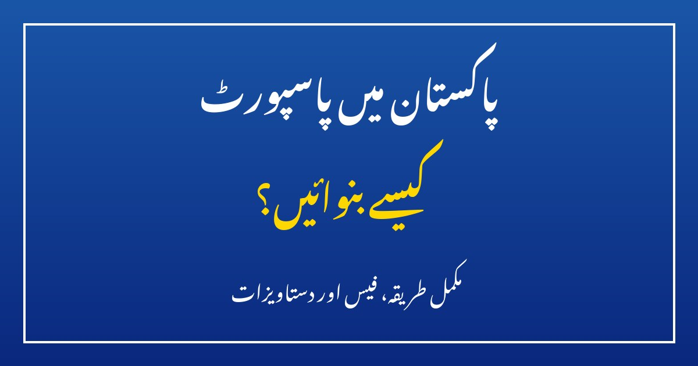

پاکستان میں پاسپورٹ کیسے بنوائیں؟ مکمل طریقہ اور فیس

بیرون ملک سفر، ملازمت، تعلیم یا عمرے کے لیے سب سے ضروری دستاویز پاسپورٹ ہے۔ پاکستان میں پاسپورٹ ڈائریکٹوریٹ جنرل آف امیگریشن اینڈ پاسپورٹس (DGIP) جاری کرتا ہے، اور اب یہ عمل پہلے سے کہیں آسان ہو چکا ہے — نیا پاسپورٹ آن لائن بھی بنوایا جا سکتا ہے اور قریبی پاسپورٹ دفتر جا کر بھی۔ اس مضمون میں پاسپورٹ کی اقسام، درکار کاغذات، آن لائن اور دفتر کا طریقہ، فیس، ٹریکنگ اور ان عام غلطیوں کا ذکر ہے جن سے درخواستیں رُک جاتی ہیں۔
1۔ پاسپورٹ کی اقسام — کون سا پاسپورٹ آپ کے لیے ہے؟
عام شہریوں کو دو طرح کے پاسپورٹ جاری کیے جاتے ہیں۔ پہلا عام مشین ریڈایبل پاسپورٹ (MRP) ہے، جو دنیا بھر میں قبول کیا جاتا ہے۔ دوسرا ای پاسپورٹ ہے، جس میں ایک الیکٹرانک چپ میں آپ کی بایومیٹرک معلومات محفوظ ہوتی ہیں — اس سے بہت سے ہوائی اڈوں پر ای گیٹس سے تیز کلیئرنس ملتی ہے اور جعلسازی کا امکان کم ہوتا ہے۔ دونوں 5 یا 10 سال کی مدت اور 36 یا 72 صفحات کے ساتھ بنوائے جا سکتے ہیں۔ کثرت سے سفر کرنے والوں کے لیے 72 صفحات بہتر ہیں، ورنہ 36 صفحات کافی ہیں۔ بچوں کا پاسپورٹ صرف 5 سال کے لیے جاری ہوتا ہے۔
2۔ کون درخواست دے سکتا ہے؟
ہر پاکستانی شہری پاسپورٹ کے لیے درخواست دے سکتا ہے، بشرطیکہ اس کا نادرا شناختی کارڈ یا بچوں کی صورت میں بے فارم (CRC) بنا ہوا ہو۔ بالغوں کے لیے کمپیوٹرائزڈ قومی شناختی کارڈ (CNIC) لازمی ہے، اور اگر اس کی مدت ختم ہو چکی ہے تو پہلے تجدید کروانا ضروری ہے، ورنہ درخواست قبول نہیں ہوگی۔ 18 سال سے کم عمر بچوں کے لیے بے فارم اور والدین میں سے کسی ایک کا شناختی کارڈ درکار ہوتا ہے۔ پرانا پاسپورٹ ختم یا گم ہونے کی صورت میں بھی نیا پاسپورٹ بنوایا جا سکتا ہے — گمشدہ پاسپورٹ کے لیے پولیس رپورٹ درکار ہو سکتی ہے۔
3۔ درکار کاغذات — جانے سے پہلے تیار رکھیں
دفتر یا آن لائن درخواست سے پہلے یہ کاغذات تیار رکھیں تاکہ کام ایک ہی مرتبہ میں مکمل ہو:
- اصل کمپیوٹرائزڈ شناختی کارڈ (CNIC) — اور اس کی ایک فوٹو کاپی
- پرانا پاسپورٹ (اگر تجدید کروا رہے ہیں) — اصل اور کاپی
- بچوں کے لیے: نادرا بے فارم (CRC) اور والد یا والدہ کا شناختی کارڈ
- شادی شدہ خواتین کے لیے: نکاح نامہ (اگر شناختی کارڈ پر شوہر کا نام درج نہیں)
- بینک چالان / فیس کی ادائیگی کا ثبوت
- ایک حالیہ پاسپورٹ سائز تصویر (آن لائن درخواست میں اپ لوڈ کرنا ہوتی ہے)
اہم بات: شناختی کارڈ پر درج نام، تاریخ پیدائش اور پتہ ہی پاسپورٹ پر چھپے گا۔ اگر کارڈ میں کوئی غلطی ہے تو پہلے نادرا سے اصلاح کروائیں — پاسپورٹ بننے کے بعد تبدیلی ایک الگ طویل عمل ہے۔
4۔ آن لائن طریقہ — گھر بیٹھے درخواست، قدم بہ قدم
DGIP کی آن لائن سروس سے گھر بیٹھے درخواست دی جا سکتی ہے۔ پہلے سرکاری ویب سائٹ (dgip.gov.pk) پر اکاؤنٹ بنائیں — شناختی کارڈ نمبر، موبائل نمبر اور ای میل درکار ہوگی۔ پھر فارم پُر کریں: ذاتی معلومات، پتہ، پاسپورٹ کی قسم (عام یا ای پاسپورٹ)، مدت (5 یا 10 سال) اور صفحات کی تعداد منتخب کریں۔ اس کے بعد دستاویزات کی اسکین شدہ کاپیاں اور تصویر اپ لوڈ کریں — تصویر کا پس منظر سفید ہو اور چہرہ صاف نظر آئے۔ پھر فیس آن لائن ادا کریں (ڈیبٹ/کریڈٹ کارڈ یا بینک سے)۔ درخواست جمع ہونے پر ٹریکنگ نمبر ملے گا، اور تیار ہونے پر پاسپورٹ آپ کے پتے پر کوریئر سے پہنچا دیا جاتا ہے — اس لیے پتہ بالکل درست لکھیں۔
5۔ دفتر جا کر طریقہ — اگر آن لائن نہ کر سکیں
قریبی علاقائی پاسپورٹ دفتر جا کر بھی درخواست دی جا سکتی ہے۔ دفتر میں پہلے بینک کاؤنٹر سے فیس جمع کروا کر چالان حاصل کریں، پھر ٹوکن لے کر باری کا انتظار کریں۔ اس کے بعد ڈیٹا انٹری، بایومیٹرک تصدیق (انگلیوں کے نشانات) اور تصویر بنائی جائے گی، اور آخر میں رسید اور ٹریکنگ نمبر ملے گا۔ دفتر کا فائدہ یہ ہے کہ دستاویز میں کمی ہو تو عملہ موقع پر بتا دیتا ہے، جبکہ آن لائن غلطی پر درخواست واپس ہو سکتی ہے۔ دفتر جاتے وقت تمام کاغذات ساتھ لے جائیں اور صبح جلدی پہنچیں، کیونکہ بڑے شہروں میں رش زیادہ ہوتا ہے۔
6۔ پاسپورٹ کی فیس — اندازاً خرچہ
فیس پاسپورٹ کی قسم، مدت، صفحات اور رفتار (نارمل یا ارجنٹ) کے لحاظ سے مختلف ہوتی ہے۔ ارجنٹ پاسپورٹ مہنگا مگر چند دنوں میں مل جاتا ہے، جبکہ نارمل میں عام طور پر چند ہفتے لگتے ہیں۔ عام 36 صفحات والے پاسپورٹ کی نارمل فیس چند ہزار روپے اور ارجنٹ تقریبا دگنی ہوتی ہے؛ 72 صفحات، 10 سالہ مدت اور ای پاسپورٹ کی فیس زیادہ ہے۔ فیسوں میں وقتا فوقتا نظرثانی ہوتی ہے، اس لیے درخواست سے پہلے تازہ ترین شیڈول DGIP کی ویب سائٹ یا قریبی دفتر سے ضرور تصدیق کر لیں۔ فیس صرف سرکاری بینک کاؤنٹر یا سرکاری آن لائن طریقے سے ادا کریں، کسی ایجنٹ کو نقد رقم نہ دیں۔
7۔ ٹریکنگ اور وصولی — پاسپورٹ کہاں پہنچا؟
درخواست کے بعد DGIP کی ویب سائٹ پر ٹریکنگ نمبر درج کر کے دیکھا جا سکتا ہے کہ پاسپورٹ کس مرحلے میں ہے — پرنٹنگ، ڈسپیچ یا ترسیل۔ آن لائن درخواست پر پاسپورٹ پتے پر کوریئر سے آتا ہے، دفتر سے درخواست پر عام طور پر دفتر سے ہی وصول کرنا ہوتا ہے۔ پاسپورٹ ملتے ہی نام، تاریخ پیدائش، نمبر اور تصویر چیک کریں — کوئی غلطی ہو تو فورا دفتر سے رابطہ کریں، سفر سے ایک دن پہلے غلطی دریافت ہونا بڑا مسئلہ بن سکتا ہے۔
8۔ عام غلطیاں جن سے درخواست رُک جاتی ہے
درخواستوں میں چند غلطیاں بار بار ہوتی ہیں۔ پہلی: شناختی کارڈ کی مدت ختم ہونا — پہلے تجدید کروائیں۔ دوسری: غلط یا نامکمل پتہ — کوریئر اسی پتے پر آئے گا۔ تیسری: تصویر کا خراب معیار — دھندلی یا پرانی تصویر مسترد ہو سکتی ہے۔ چوتھی: پرانے پاسپورٹ کی معلومات چھپانا — پہلے پاسپورٹ کا ذکر ضرور کریں، ورنہ تاخیر یا مسترد ہونے کا خطرہ ہے۔ پانچویں: ایجنٹوں پر بھروسہ — عمل اب شفاف اور سیدھا ہے، ایجنٹ کو اضافی رقم دینے کی ضرورت نہیں۔
پاسپورٹ بنوانا اب مشکل کام نہیں — کاغذات مکمل ہوں اور شناختی کارڈ درست ہو تو چند ہفتوں میں پاسپورٹ ہاتھ میں ہوگا۔ آج ہی اپنے کارڈ کی مدت اور پرانے پاسپورٹ کی تاریخ چیک کریں، اور سفر کا ارادہ ہے تو درخواست میں تاخیر نہ کریں۔